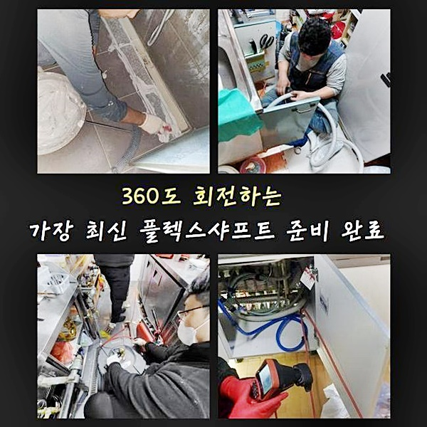
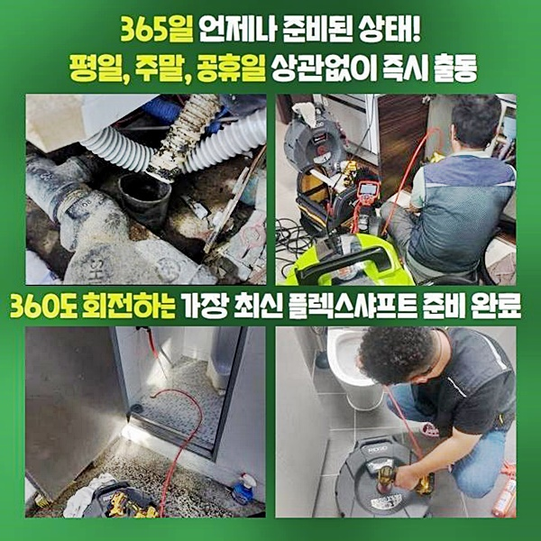
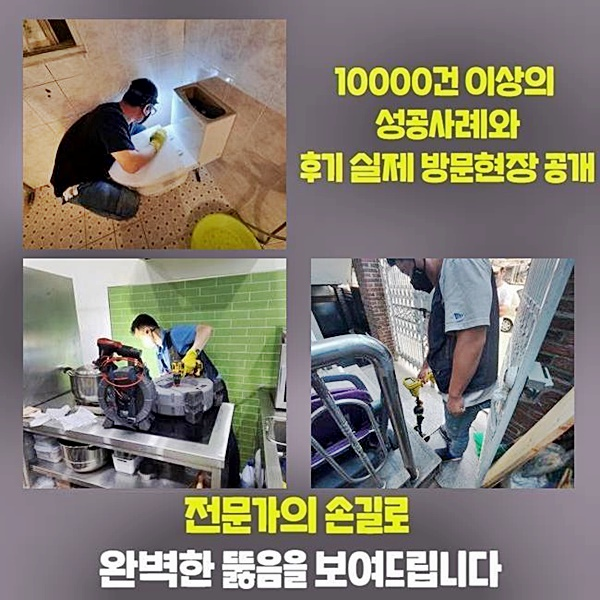
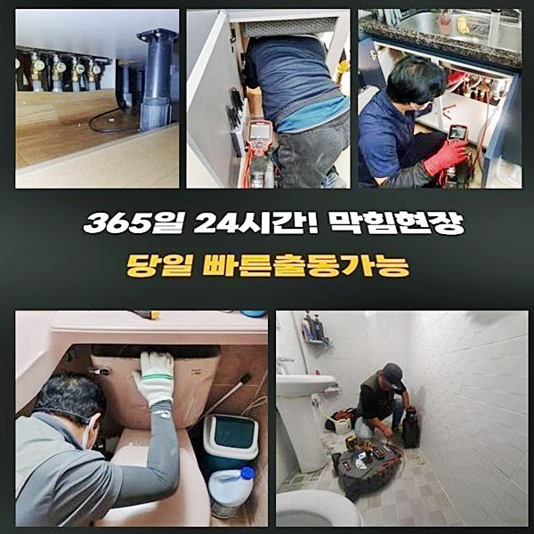
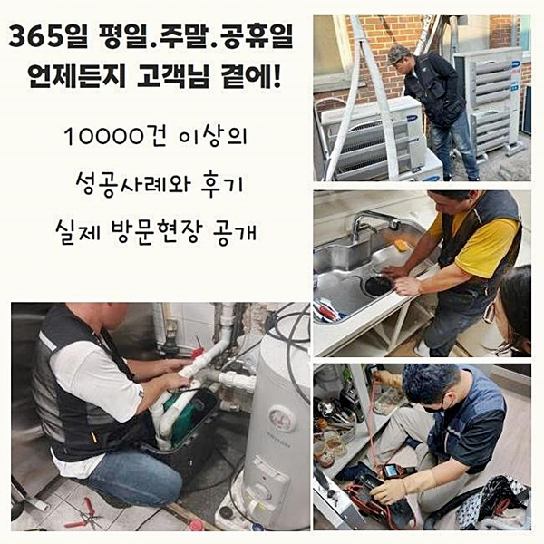

🏠 성동구 사근동변기역류 성수동 배관뚫기 수리업체
서울 성동구 변기막힘 전문 시공 후기

📋 작업 개요
- 위치: 서울 성동구, 성동구, 서울
- 서비스 유형: 변기막힘, 하수구막힘, 배관막힘, 역류해결, 뚫는업체, 배관청소, 고압세척, 악취차단
- 작업 일시: 2025. 3. 9. 22:03
- 업체명: 하수구수사대 (010-5615-2118)
🔍 문제 상황
안현동화장실하수구막힘 연성동 하수구청소장비 출장설비
욕실 구조는 집안에서 이용하는 구역 가운데 수도시설을 가장 빈번하게 쓰게 되는 것 같습니다
내부의 상황을 보면 양변기나 바닥 하수구와 욕조도기나 샤워시설같이 다량의 물이 필요한 설비가 다량 있다는 것을 인지할 수 있어요
그렇기에 물소비가 많은 욕실 기능 탓에 하수구가 차단되는 현상이 피치 못하게 형성 되어지는 배경일 수 밖에 없죠
어느 날 갑자기 물 내려감이 중지됐는데 물길이 회복될 낌새가 없어서 수선을 요청해 주셨습니다
장소에 도착한 뒤 욕실 쪽의 문제점부터 분석을 해봤더니 뿌연 하수가 배관으로 아예 이동하지 못한 채 가득 차오른 상황이었죠
저녁에 개수대를 쓸 때 배수의 속도가 저하되는 경향이 감지되었는데 작동이 멈춘 채 쌓인 상태까지는 새로이 생겨나게 된 징후라고 하셨네요
욕실의 세면기 종류는 물을 쓰면서 각질층이나 머리칼을 포함한 오염원이 유입되면서 차단될 가망성이 높은 편입니다!
세면대 이용을 하기가 전혀 허락되지 않은 상황이라 재빠르게 막힌 부분을 해소하기 위한 작업에 뛰어들게 됐네요
가져간 첨단 장치들을 가동시키기 이전에 내측의 현황과 상태를 세부적으로 관측하면서 처리 방향을 설립합니다
현장을 보니 세면대의 파이프가 벽 안으로 숨겨진 상태였는데요

🔎 원인 분석
💡 전문가 진단: 정밀 진단 장비를 사용하여 슬러지의 고착 여부를 판명하고 타격/세척 작업을 실시했습니다.
눈으로 감별되는 부분에는 배관 일부라도 감지되지는 않은 부분이라 벽이나 바닥을 파는 것과 같은 추가적인 조치가 개입되어야 할 때가 있다는 점을 넌지시 알려드렸습니다
건물의 연식에 따라서 기타 설비의 세부사항은 차이점이 보입니다
최근에 건축되는 신축 건물의 경우라면 배관이 보이지 않는 곳에 묻혀있을 떄가 많은데 이는 냄새차단도 해주면서 더불어 외형적으로도 미니멀하게 다듬는 겁니다
무엇이 문제인지를 검출해 내기 위해서는 세면대 똑딱이 버튼을 들어내 준 다음에 면밀히 살펴보려 합니다
방문드린 해당 장소는 건물이 유지된 역사가 한참을 거슬러 가야할 현장은 아니었으므로 파이프라인이 약해지거나 취약해 진 것은 아니었어요
간혹 준공일이 매우 이른 상황일 경우에는 세면대의 부품까지도 녹슬고 부식해서 지속적인 마찰이 가해지면 팝업 자체가 동강나거나 빠져버리기도 합니다
배관 속에 물이 찬 증상이 한참 지났다면 연결되어 있는 부품까지도 비정상적으로 작동하는 일로 확산될 경우가 많습니다
내측에 끼인 물질에 따라서 충분한 변수는 있지만 식품 잔여물로 인해서 정체되고 있는 곳이라면 내측에 계속 머무르면서 썩으면서 굉장한 치명적인 냄새를 유발하게 됩니다
이 문제도 별도로 처리해야 하며 배관 자체의 형태에 따라서 부작용이 초래될 때가 많으니 작업지에서 꼼꼼한 테스트들을 거처가야 할테지요
내측에서 벌어지는 일을 살펴보니 알파벳 P자로 꺾인 모양으로 형성되어 있었기에 해당 집 안에서 문제를 풀어가지 못한다면 인접한 주민의 동의를 받아 천장을 해체하는 일이 필요할 수도 있는 상황이었죠
웬만하면 한 세대 방문만으로 모두 마침표를 찍을 수 있게끔 최선을 다해야하므로 우선 현황판별을 위하여 검색 장치를 활용해서 정보를 파악해야 하죠!

🔧 작업 과정
세면기 똑딱이 버튼을 꺼내보니 많은 양의 이물이 누적되어 있었습니다
세수 등의 활동으로 분리된 각질 조각과 세안제 뭉치들이 조금씩 누적되어가며 틈도없이 차오른 거였습니다
세면대뚜껑 표면에 이물질이 강하게 결착하면 낄끔하게 새로 갈아주거나 부속품만 청소해 줘도 사태가 개선됩니다
세면대 내의 수분이 나아가지 못한다면 우선은 폽업의 근처가 통제되었거나 전체 배수 시스템까지 장애요소가 끼인 경우로 나눠 생각해볼 수 있어요
관로 안까지도 생활찌꺼기가 도달한 모습이 보였으므로 심도깊은 청소가 반드시 필요하다 생각됐어요
밑집으로 이동하여 천장 방면으로 뚫어야 할 까다로운 일은 아니었기에 위에서 아래로 내려가면서 뚫어나가는 것만으로도 가뿐하게 봉쇄된 측면이 개선되겠다는 밝은 전망이 보였네요
실제로 착공을 해 보아야 확정할 수 있지만 초기단계에서 가늠해본 현황을 봤을 땐 한 세대 안에서 통수가 이뤄질 것 같았네요
조사를 통한 내용은 홀로 아는게 아니라 지켜보시는 고객분께도 자세히 알려드린답니다
회전동력을 기반으로 한 장치로 배관 내 흐름 장애를 야기하는 불순물들을 정화해 나가야 합니다
불순물의 절대적 양이 많았기에 완전한 소강을 위해선 실행을 반복해줘야 했네요
장소의 특성을 반영해 작업에 걸리는 절대적인 시간의 경우는 변화하는 게 일반적입니다
잔여물이 뭉쳐서 결정화되었거나 양이 많아서 처리가 힘든 경우는 작업 소요 시간이 한층 길어질 수도 있어요
파이프 속에 내장된 오염원을 차례로 꼼꼼히 세척하다보면 맑게 변화하게 됩니다
회전하는 청소 도구와 배관전용 카메라는 얇은 노즐로 형성된 덕분에 구멍으로 같이 투여되어 계속해서 모니터링하면서 장비를 핸들링할 수 있어요!
얼만큼 소강이 되었는지 순간순간 파악해가며 조치할 수 있으니 물길에 차질을 빚는 상태를 남겨지는 측면 없이 탈바꿈시킬 수 있습니다
통행불능의 상태를 구축했던 고질적인 것들이 모조리 자취를 감췄습니다
가득 충전되어 있던 방해하는 요소들이 잔여하지 않는 고로 물이 막힘 없이 스피디하게 배출됩니다
세면대에 물을 받고 나서 통수검사를 이행하면서 추가적인 걸림돌은 없는지를 철두철미하게 점검하고 안심을 드리고 있으며 이외의 오류가 만들어지는 상황에서는 사후 서비스 역시 도맡겠습니다


✅ 작업 완료
배관의 근처에 때가 많이 껴 있고 부식된 곳이 있어서 이 부분도 조치해 드리고 위생적으로 마무리해요
상황마다 들어가는 작업 절차가 변동이 있으므로 명확한 수준으로는 전화상으로 가격을 확정지을 순 없습니다
여러 장치들을 비롯한 내시경기기까지 도입하여 어떤 방식이 효율적일지 노선을 확정한 다음에 최종적인 소요비용을 지정할 수 있습니다
더 알고싶은 점이 있다면 정비하는 과정이라도 자유롭게 질문해 주세요
다수의 경험이 있는 직원이 세부적 과정에 대한 설명을 브리핑을 해드리며 일하고 건물 내에 깔린 설비의 구조적인 문제가 발견되고 담당한 배관 이외의 이슈가 도래하게 되더라도에도 곧바로 처리를 해드리니 그저 편안하게 기다리시면 된답니다!




⚠️ 하수구 배관 막힘 예방 및 관리 가이드
- ✅ 머리카락, 비닐, 물티슈 등 물에 분해되지 않는 이물질은 하수구 유입을 절대 금지해 주세요.
- ✅ 하수구 거름망을 씌우고 모여진 이물질은 주기적으로 쓰레기통에 바로 비워주셔야 합니다.
- ✅ 배관 노후가 심할 경우 이물질이 더 쉽게 걸리므로 주기적인 배관 세척(고압세척 등)을 권장합니다.
- ✅ 작업 후 1년 이내 재발 시 하수구수사대에서 무상 A/S 보증 서비스를 제공합니다.
💡 핵심 정리
- 확실한 장비 작업(내시경 점검 및 샤프트 스케일링)으로 원인을 뿌리 뽑습니다.
- 작업 후 1년 이내에 동일한 부위 재발 시 100% 무상 A/S 서비스를 보장합니다.
- 서울 · 경기 · 인천 전 지역에 24시간 언제든 긴급 출동할 수 있도록 항시 대기 중입니다.
❓ 자주 묻는 질문 (FAQ)
🚨 서울 성동구 변기막힘 문제로 고민이신가요?
정확한 원인 진단과 확실한 시공으로 재발 없는 해결을 약속드립니다.
24시간 긴급 출동 | 서울 · 경기 · 인천 전지역 | 1년 내 재발 시 무상 A/S